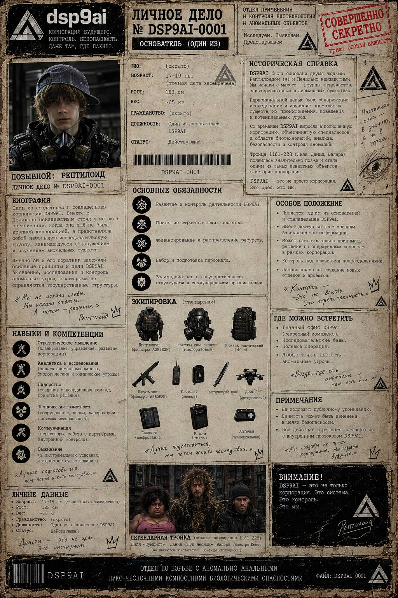

PERSONNEL / 002
Рузлан
Совладелец DSP9AI и один из основателей организации.

БИОГРАФИЯ
Один из создателей и совладельцев корпорации DSP9AI. Вместе с Печально неизвестным стоял у истоков организации, когда она ещё не была крупной корпорацией, а представляла собой небольшую исследовательскую группу, занимающуюся обнаружением и изучением аномальных существ.
Именно он и его соратник заложили основные принципы и цели DSP9AI: выявление, исследование и контроль аномальных угроз, с которыми не справляются государственные структуры.
ПОЗЫВНОЙ: РЕПТИЛОИД
ЛИЧНОЕ ДЕЛО: DSP9AI-0001
ВОЗРАСТ: 17–19 лет (точная дата засекречена)
РОСТ: 183 см
ВЕС: ~65 кг
ДОЛЖНОСТЬ: Один из основателей DSP9AI
СТАТУС: Действующий
СОВЛАДЕЛЕЦ